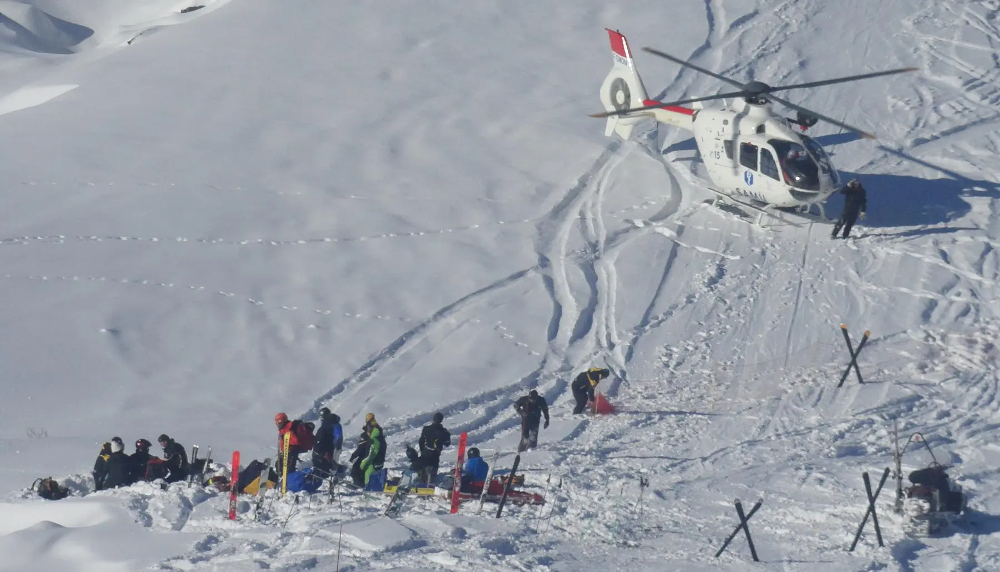
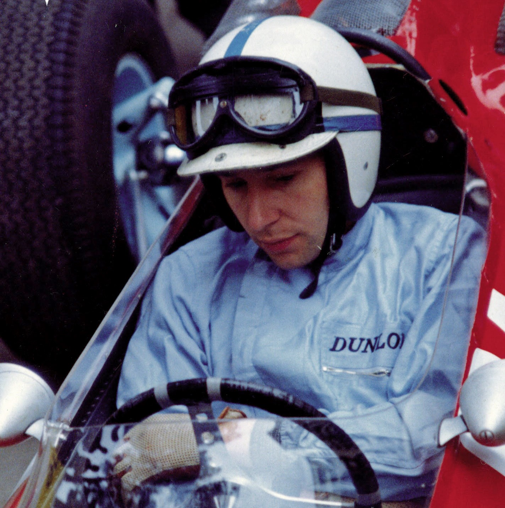

Begin van de Formule 1

De Formule 1 begon officieel in 1950, toen het allereerste wereldkampioenschap voor coureurs werd georganiseerd. De eerste Grand Prix van dat seizoen werd gereden op Silverstone in het Verenigd Koninkrijk. Giuseppe Farina uit Italië werd de allereerste wereldkampioen, rijdend voor Alfa Romeo. In deze beginjaren bestond de sport vooral uit Europese races en waren de auto’s relatief eenvoudig vergeleken met de moderne bolides. Toch legden deze vroege jaren de basis voor wat later een van de populairste en technologisch meest geavanceerde sporten ter wereld zou worden. De regels en structuren die toen werden ingevoerd, zijn de basis gebleven voor het huidige kampioenschap.
Belangrijke coureur uit het verleden

Een belangrijke coureur uit het verleden is Michael Schumacher, die wordt gezien als een van de grootste Formule 1-coureurs aller tijden. Hij debuteerde in 1991 en maakte naam met zijn snelheid, precisie en doorzettingsvermogen. Schumacher won zeven wereldkampioenschappen, waarvan vijf achter elkaar met Ferrari tussen 2000 en 2004, en behaalde tientallen Grand Prix-overwinningen en pole positions. Hij stond bekend om zijn vermogen om het maximale uit zijn auto en team te halen, zelfs onder moeilijke omstandigheden. Na zijn definitieve afscheid van de Formule 1 in 2012 raakte Schumacher in 2013 ernstig gewond bij een ski-ongeluk in de Franse Alpen, waardoor hij langdurig in coma raakte en sindsdien grotendeels buiten het publieke leven blijft. Zijn records en invloed op strategie, training en teammanagement maken hem een blijvend icoon in de geschiedenis van de sport.
Evolutie van Veiligheid

Veiligheid is door de geschiedenis van de Formule 1 steeds belangrijker geworden. In de vroege jaren waren races extreem gevaarlijk; coureurs reden met minimale bescherming en er vielen regelmatig dodelijke slachtoffers of zwaar gewonden. Naarmate de sport zich ontwikkelde, nam de FIA ingrijpende maatregelen om dit te veranderen. Auto’s kregen sterkere chassis, brandwerende materialen en crashtests werden verplicht, terwijl circuits veiliger werden gemaakt met bredere uitloopzones, verbeterde barrières en professionele medische teams ter plaatse. Ook de helmen zijn enorm geëvolueerd: waar in de jaren ’50 nog eenvoudige metalen of leren helmen werden gebruikt, dragen coureurs nu lichtgewicht koolstofvezelhelmen met geavanceerde schokabsorptie, brandwerende binnenvoering, ventilatie en communicatiesystemen. Daarnaast zijn veiligheidsvoorzieningen zoals de halo, het HANS-systeem en verbeterde brandveiligheid in de cockpit verplicht, waardoor het risico op ernstig hoofd- of nekletsel aanzienlijk is verminderd. Dankzij al deze innovaties is de Formule 1 tegenwoordig veel veiliger, terwijl coureurs nog steeds op enorme snelheid en onder extreme omstandigheden kunnen rijden, zonder dat de spanning of het spektakel van de sport verloren gaat.